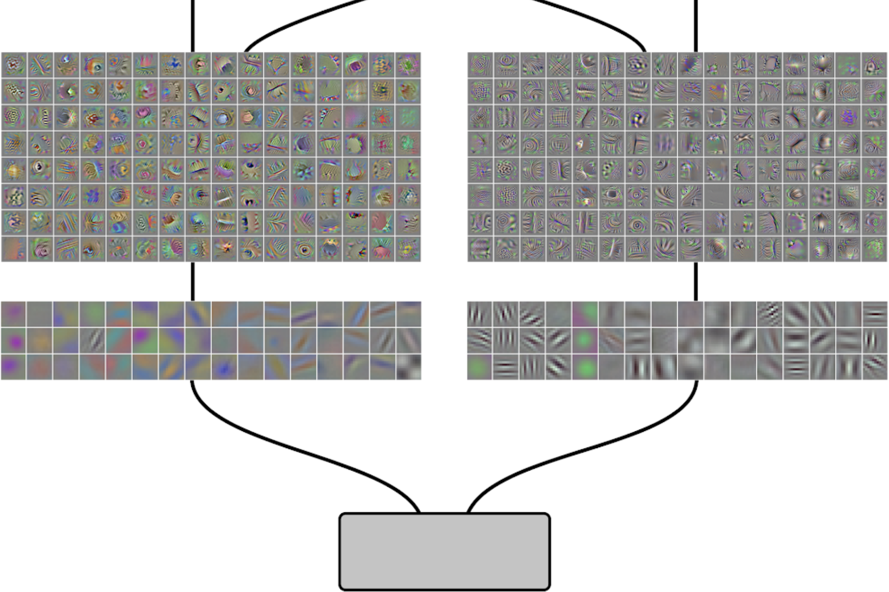
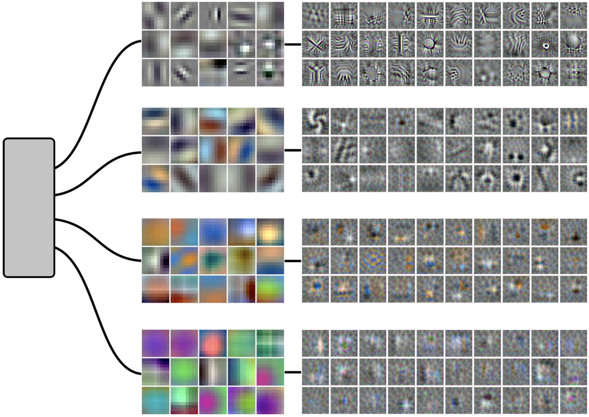

本文是 线程：电路 系列的一部分，该系列以实验性格式收集受邀的短文和批判性评论，深入探讨神经网络的内部工作机制。
可视化权重
权重带状分布
引言
如果我们将可解释性视为神经网络的一种“解剖学”，那么 circuits thread 中的大部分内容都在研究极细小的血管——聚焦于小尺度，观察单个神经元及其连接方式。然而，许多自然而然的问题是小尺度方法无法解答的。
相比之下，生物解剖学中最突出的抽象概念都涉及更大尺度的结构：单个器官（如心脏），或整个器官系统（如呼吸系统）。于是我们不禁要问：人工神经网络中是否存在“呼吸系统”“心脏”或“脑区”？神经网络中是否有任何大于电路尺度的涌现结构值得我们研究？
本文将描述分支特化（branch specialization），这是我们在神经网络中观察到的三种较大“结构现象”之一。（另外两种——神经网络中的自然等变性 和 权重带状结构——有各自独立的文章。）分支特化出现在神经网络层被拆分成多个分支时。神经元和电路倾向于自我组织，将相关功能聚类到每个分支中，从而形成更大的功能单元——一种“神经网络脑区”。我们发现证据表明，这些结构在没有显式分支的神经网络中也隐含存在，而分支只是将原本就存在的结构显性化了。
我们所知最早的分支特化例子来自 AlexNet。AlexNet 作为计算机视觉领域的重大突破，标志着深度学习革命的开端，但在论文中还埋藏着一个引人入胜却很少被讨论的细节。 AlexNet 的前两层被拆分成两个分支，这两个分支在第二层之后才能重新通信。这种结构最初是为了在两个 GPU 上最大化训练效率而设计的，但作者们注意到由此产生了一个非常有趣的现象。第一层的神经元自我组织成两个群体：一个分支上形成了黑白 Gabor 滤波器，另一个分支上则形成了低频颜色检测器。

虽然 AlexNet 第一层是文献中我们所知唯一被讨论过的分支特化例子，但它似乎是一种普遍现象。我们发现分支特化不仅发生在第一层，也会出现在更靠后的隐藏层中。它既能出现在低层次特征上，也能出现在高层次特征上。它发生在多种模型中，包括一些你可能意想不到的地方——例如，ResNet 中的残差块在功能上可以视为分支并发生特化。最后，即使在没有任何特定结构诱导的普通卷积网络中，分支特化似乎也会作为一种结构现象浮现出来。
神经网络的运行方式是否存在大尺度结构？特征和电路在模型内部是如何组织的？网络架构是否会影响形成的特征和电路？分支特化对所有这些问题都暗示了一个激动人心的故事。
什么是分支？
许多神经网络架构都包含分支，即暂时无法访问“并行”信息（这些信息仍会被传递给后续层）的一系列层。
[交互图：2. 各类神经网络架构中的分支示例。——查看原文：https://distill.pub/2020/circuits/branch-specialization]
过去，带有显式标记分支的模型非常流行（如 AlexNet 和 Inception 系列网络）。近年来这类设计已不那么常见，但残差网络——其残差块可视为隐含地包含分支——却变得非常普遍。我们有时也能看到神经架构搜索（一种让网络架构被自动学习的方法）会自动产生分支架构。
残差网络的隐式分支存在一些重要的细微差别。乍一看，每一层都是一个双路分支。但由于这些分支是通过相加来合并的，我们实际上可以重写模型，揭示残差块可以被理解为并行的分支：
[交互图：3. 作为并行分支的残差块。——查看原文：https://distill.pub/2020/circuits/branch-specialization]
我们通常在非常深的残差网络（如 ResNet-152）中看到残差块发生特化。一种解释是，在这些模型中，层的精确深度不再重要，而分支特性变得比序列特性更重要。
普通分支模型的一个概念性弱点是，尽管分支可以节省参数，但要在分支之间混合数值仍然需要大量参数。然而，如果你接受对残差网络的分支解释，你会发现它们提供了一种绕过这个问题的策略：残差网络通过低秩连接（将所有块投影到同一个求和后再升维）来混合分支（如块稀疏权重）。这似乎是一种非常优雅的处理分支的方式。更实际的是，它表明对残差网络的分析或许应该特别关注块内的单元，而且我们可能会预期残差流具有异常的多义性。
分支特化为什么会发生？
分支特化的定义是特征在分支之间进行组织。在普通层中，特征是随机组织的：某个给定特征出现在层中任意神经元上的概率相同。但在分支层中，我们经常看到某一类特征会聚类到某个分支上。该分支就特化于那类特征。
这是如何发生的？我们的直觉是，训练过程中存在一个正反馈循环。
[交互图：4. 训练过程中分支特化的假设正反馈循环。——查看原文：https://distill.pub/2020/circuits/branch-specialization]
另一种思考方式是：如果你需要把神经网络切成几块，而这些块之间通信能力有限，那么将相似特征组织得更近是有道理的，因为它们很可能需要共享更多信息。
第一层之后的分支特化
到目前为止，我们展示的唯一具体分支特化例子是 AlexNet 的第一层和第二层。那更后面的层呢？毕竟 AlexNet 的后续层也分割成了分支。这个问题似乎尚未被探索，因为研究第一层之后的特征要困难得多。[1]
不幸的是，AlexNet 后续层中的分支特化也非常微妙。它不像一个整体的大分裂，而更像是几十个小规模的神经元簇，每个簇被分配到一个分支上。我们很难确信自己看到的不是噪声中的模式。
但其他模型在后续层中展现出了非常清晰的分支特化。这种情况往往发生在某个分支只占层中非常小一部分时，原因要么是存在多个分支，要么是其中一个分支远小于其他分支。在这些情况下，该分支可以特化于层中存在的特征的一个非常小的子集，从而展现出清晰的模式。
例如，InceptionV1 的大多数层都具有分支结构。这些分支具有不同数量的单元和不同的卷积核尺寸。5x5 分支是其中最小的分支，同时也具有最大的卷积核尺寸。它通常会表现出非常强的特化：
[交互图：5. mixed3a_5x5、mixed3b_5x5 和 mixed4a_5x5 中分支特化的例子。——查看原文：https://distill.pub/2020/circuits/branch-specialization]
这种现象极不可能是随机发生的。 例如，在 mixed3a 中，所有 9 个黑白与颜色检测器都出现在 mixed3a_5x5 中，尽管该分支仅占整个层 256 个神经元中的 32 个。随机发生这种事的概率小于 1/10^8。更极端的例子是，在 mixed3b 中，所有 30 个与曲线相关的特征都出现在 mixed3b_5x5 中，尽管它仅占整个层 480 个神经元中的 96 个。随机发生这种事的概率小于 1/10^20。
值得注意的是，有一个混杂因素可能影响了这种特化。5x5 分支虽然是最小的分支，但其卷积核尺寸（5x5 而非 3x3 或 1x1）比相邻分支更大。[2]
分支特化为什么具有一致性？
关于分支特化最令人惊讶的一点，或许是相同的分支特化似乎会反复出现，跨越不同的架构和任务。
例如，我们在 AlexNet 中观察到的分支特化——第一层分裂为黑白 Gabor 分支与低频颜色分支——是一种惊人稳健的现象。如果你重新训练 AlexNet，它会一致地出现。如果你训练其他前几层被拆分成两个分支的架构，这种现象也会出现。甚至当你在其他自然图像数据集（如 Places 而非 ImageNet）上训练这些模型时，它依然会出现。轶事证据还表明，其他类型的分支特化似乎也会反复出现。例如，找到似乎特化于曲线检测的分支相当常见（尽管我们只仔细刻画过 InceptionV1 的 mixed3b_5x5）。
那么，为什么同样的分支特化会反复出现呢？
有一个假设非常诱人。请注意，许多在普通非分支模型中形成的特征，似乎也会在分支模型中形成。例如，无论是有分支还是无分支模型，其第一层都包含 Gabor 滤波器和颜色特征。如果相同的特征存在，那么它们之间的权重很可能也是相同的。
是否可能是分支只是在将原本就已经存在的结构显性化？也许在普通模型中，第一层和第二层卷积层之间的权重构成了两个不同的子图，它们之间的权重相对较小，而当你训练分支模型时，这两个子图就“锁定”到了对应的分支上。 （这在方向上与发现神经网络中存在模块化子结构的工作类似。）
为了验证这一点，让我们观察那些第一层和第二层卷积层没有分支的模型。我们取出它们之间的权重，对权重的绝对值进行奇异值分解（SVD）。这将向我们展示哪些神经元连接到下一层不同神经元的主要变化因素（无论这些连接是兴奋性的还是抑制性的）。
果然，InceptionV1 前两层卷积之间权重的奇异向量（最大的变化因素）正是颜色。
[交互图：6. InceptionV1 在 ImageNet（上）或 Places365（下）上训练得到的前两层卷积的奇异向量。可以将图中神经元靠得越近理解为它们倾向于连接到相似的神经元。——查看原文：https://distill.pub/2020/circuits/branch-specialization]
我们还看到第二个主要因素似乎是 高低频探测器。这暗示了一个有趣的预测：如果我们将该层拆分成两个以上的分支，或许除了颜色之外，还会观察到频率上的特化。
这似乎是成立的。例如，这里我们看到了一个高频黑白分支、一个中频主要黑白分支、一个中频颜色分支，以及一个低频颜色分支。

与神经科学的相似之处
我们已经表明，分支特化是结构现象的一个例子——神经网络中的一种更大尺度结构。它发生在各种情境和神经网络架构中，而且具有一致性——某些特化模式，如颜色、频率和曲线，会跨越不同架构和任务稳定出现。
回到我们与解剖学的对比，虽然我们不愿声称存在明确的神经科学对应关系，但仍忍不住将分支特化与大脑中专注于特定任务的区域进行类比。 视觉皮层、听觉皮层、Broca 区和 Wernicke 区 [3] ——这些都是在广大人群中具有如此一致特化的大脑区域，以至于神经科学家和心理学家能够将其刻画为具有惊人一致的功能。 作为不具备神经科学专业背景的研究者，我们不确定这种联系有多大用处，但值得考虑的是，分支特化是否可以作为一个有用的模型，帮助我们理解特化如何在生物神经网络中涌现。
本文是 线程：电路 系列的一部分，该系列以实验性格式收集受邀的短文和批判性评论，深入探讨神经网络的内部工作机制。
可视化权重
权重带状分布
评论
Matthew Nolan
是爱丁堡大学发现脑科学中心和 Simons 发育脑计划的神经电路与计算教授。
Ian Hawes
是爱丁堡大学 Wellcome Trust 转化神经科学项目的博士生。
作为神经科学家，我们对这项工作感到兴奋，因为它为长期存在的关于大脑如何组织和如何发育的问题提供了全新的理论视角。分支和特化在大脑中随处可见。一个被充分研究的例子是背侧和腹侧视觉通路，它们分别与空间和非空间视觉处理相关。在微电路层面，每个通路中的神经元都很相似。然而，神经活动记录显示出显著的特化：20 世纪 70-80 年代的经典实验确立了这样的观点——腹侧通路负责物体识别，而背侧通路则表征物体的位置。此后，我们对这些通路中的信号处理有了很多了解，但诸如为什么存在多条通路以及它们如何建立等根本问题仍未得到解答。
从神经科学家的视角看，Voss 及其同事关于分支特化的研究中一个引人注目的结果是：即使没有任何复杂的、分支特定的设计规则，稳健的分支特化也会涌现出来。他们的分析表明，特化在不同架构内部和架构之间、以及不同训练任务中都是相似的。这意味着分支特化的出现并不需要特定的指令。事实上，他们的分析暗示，即使在没有预先设定分支的情况下，它也会出现。相比之下，许多神经科学家的直觉是，新皮层不同区域的特化需要每个区域特有的发育机制。对于试图理解大脑如何产生感知和认知功能的神经科学家来说，这里一个重要的想法是：驱动皮层通路分离（如背侧和腹侧视觉通路）的发育机制可能是绝对关键的。
虽然人工神经网络中的分支特化与大脑神经电路之间的相似之处令人印象深刻，但显然也存在重大差异和许多悬而未决的问题。从构建人工神经网络的角度，我们想知道对单个单元及其连接规则进行分支特定的调优是否会提升性能？在大脑中，有充分证据表明单个神经元的激活函数在不同神经电路之间甚至内部都经过了精细调优。如果这种精细调优能为大脑带来好处，那么我们可能会期待在人工网络中也能获得类似的好处。从理解大脑的角度，我们想知道分支特化是否能帮助做出可通过实验检验的预测？如果我们能设计出具有与大脑分支通路相似组织的人工网络分支，那么对这些网络进行的操纵就可以与使用光遗传和化学遗传策略实现的实验操纵进行比较。鉴于许多脑部疾病涉及特定神经群体的改变，类似的策略或许能让我们洞察这些病理变化如何改变大脑功能。例如，在阿尔茨海默病早期，特定神经元群体会受到破坏。通过破坏神经网络模型中对应的单元，我们可以探索由此产生的计算缺陷以及可能的认知功能恢复策略。